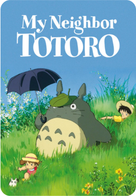
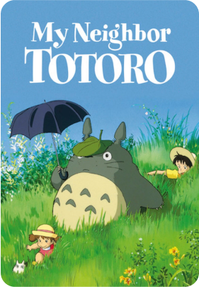

¡Bienvenidos al mundo Ghibli!
Este sitio está dedicado a todos los amantes de las películas de Studio Ghibli, donde podrán disfrutar de una amplia gama de información, noticias y contenido multimedia relacionado con las películas del estudio. Desde los mundos mágicos y maravillosos de "El viaje de Chihiro" y "Mi vecino Totoro" hasta los relatos conmovedores y emocionales de "La tumba de las luciérnagas" y "El viento se levanta", Studio Ghibli ha dejado una huella indeleble en el mundo del cine y la cultura popular.
Esperamos que disfruten su visita y que esta sea el comienzo de una emocionante aventura en el mundo de Ghibli. ¡Bienvenidos al mundo de la magia y la creatividad!

Películas más vistas
 
